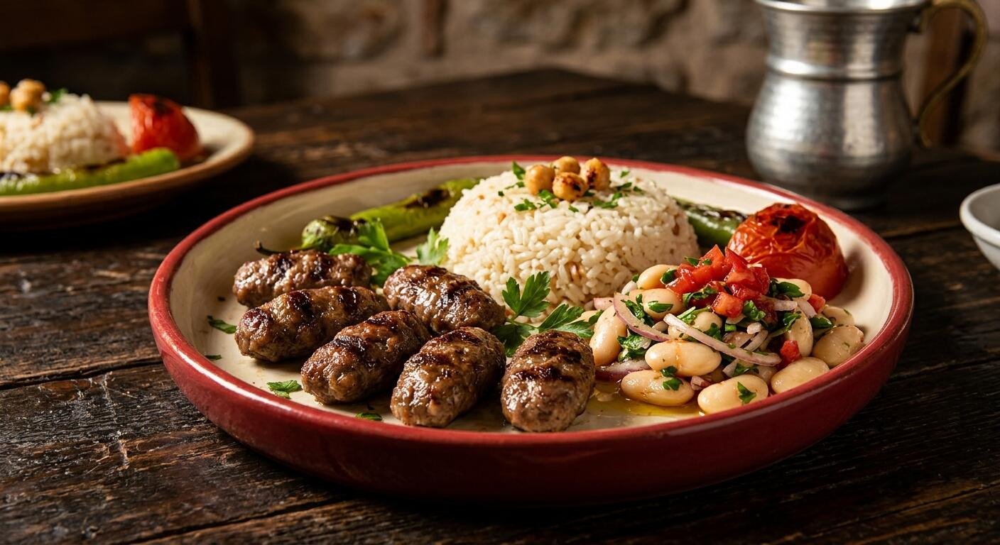
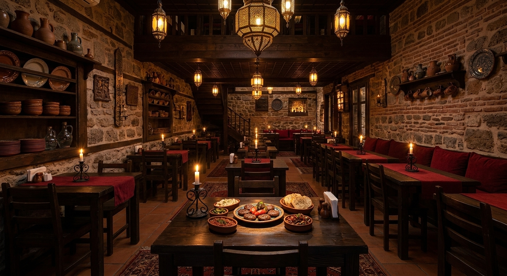
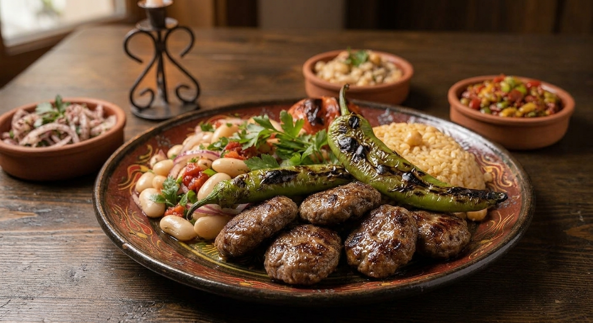
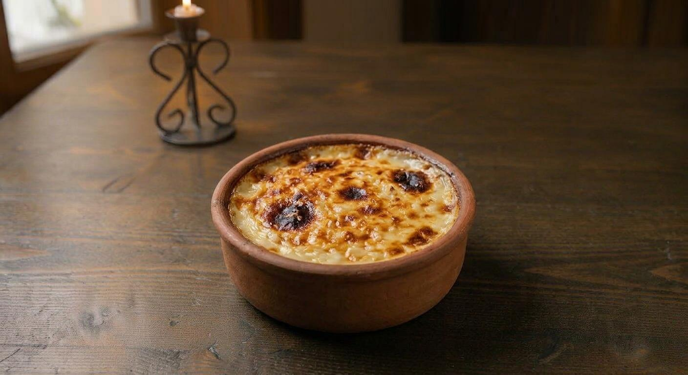
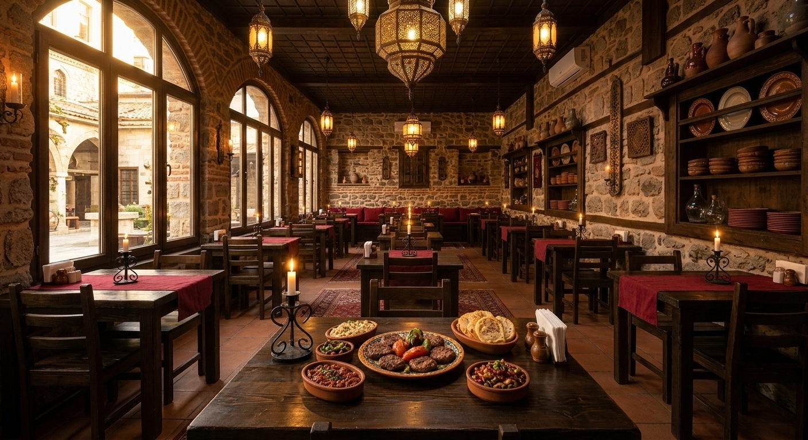

Geleneksel Bursa lezzeti
Bursa'nın Ev Yapımı Köftesi
Günlük hazırlanan köfteler, taze mevsim sebzeleri ve ev yapımı tatlılarla Bursa'da geleneksel lezzet.
Mutfağımızdan seçtiklerimiz
Öne Çıkan Lezzetler



Bizim hikayemiz
Bursa'da ev sıcaklığında bir sofra
Köfteci Ayşe, geleneksel tarifleri günlük ve taze malzemelerle hazırlayan samimi bir aile işletmesidir. Amacımız, Bursa'ya gelen herkesin kendini evinde hissedeceği temiz ve güvenilir bir sofra kurmaktır.
- Günlük hazırlanan köfte
- Taze ve mevsimlik malzeme
- Aile işletmesi sıcaklığı
Tek şubemiz
Bizi Ziyaret Edin
Çalışma Saatleri
- Pazartesi - Cumartesi
- -
- Pazar
- -
Size yardımcı olmaktan mutluluk duyarız